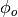
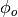
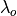

daydusk – Daylight Dusk and Dawn Calculator¶
This is essentially the same calculations in sunup, seasons, and riseset.
sunup and seasons appear to be copy-and-paste clones of each other. These programs use positive west longitude.
The daydusk and riseset programs, however, are considerably easier to understand. They have lavish comments. They also use positive east longitude, consistent with many astronomical calculations.
Also the gridsq includes the same astronomical calculations as daydusk and riseset.
Analysis¶
This program introduces two new things:
Alternate Horizons¶
An angle below the zenith defines which dawn we’re talking about. We’ll call it R. The standard “visible” horizon, correcting for refraction and diameter of the sun is 90.833° from the zenith.
- Astronomical: 108° from the zenith; 18° below horizon
- Nautical: 102° from the zenith; 12° below horizon
- Civil: 96° from the zenith; 6° below horizon
- Dawn/Dusk (including sun’s diameter and refraction) is 90.833° from the zenith; .833° below the horizon.
It seems to figure in this way when computing the Hour Angle in lines 2030-2040
based on the declination,  , and the latitude of the observer, .
, and the latitude of the observer, .
This is not the full hour angle calculation; it goes on to line 2180. This, however, is the place where the offset, R, is used.
When we look at the hamcalc.navigation.solar (sunup – Sunrise, Sunset, Transit) we see this calculation of the Hour Angle, W, based on declination, T.

It appears that we can replace 90.833° with another angle of our choosing.
Sidereal Time¶
Sidereal Time is defined as follows: “The right ascension of any object crossing the meridian is equal to the current local (apparent) sidereal time, ...”
See http://en.wikipedia.org/wiki/Sidereal_time
http://en.wikipedia.org/wiki/Celestial_coordinate_system
Where is local sidereal time,  is right ascension and h is hour angle.
is right ascension and h is hour angle.
Where is Greenish sidereal time, is right ascension and h is hour angle and  is the observer’s longitude.
Implementation¶
We can easily parameterize the hamcalc.navigation.solar calculations to define an alternate horizon. See sunup – Sunrise, Sunset, Transit.
It becomes a cute little module in hamcalc.stdio that solves for “HA Sunrise” (W) of 90+18, 90+12, 90+6 and the default of 90.833 for a given date.
Legacy Output¶
Introduction:
DAYLIGHT DUSK & DAWN CALCULATOR Author Unknown
Edited for HAMCALC by George Murphy, VE3ERP
This program computes times of sunrise, sunset, dawn and dusk at any location.
Enter the latitude and longitude of the location in decimal degrees. If the
latitude is south of the equator enter the latitude as a minus (-) value or as
a positive value if north of the equator. If the longitude is west of the
prime meridian (0° - Greenwich) enter the longitude as a minus (-) value or as
a positive value if west of the prime meridian.
Times calculated are local sidereal (SOLAR) times. Forget about Standard Time,
Daylight Saving Time, local political time, UTC, or any other man-made time
system. Sidereal time is time referenced to the stars. It is the time shown
for millenia on properly installed sun dials.
Related data can also be calculated using Hamcalc's `Sunrise/Sunset' program.
Input:
ENTER: Latitude, in decimal degrees (minus if south)...? 38
ENTER: Longitude, in decimal degrees (minus if west)...? -76
Location.............. 38.0°N 76.0°W. Local UTC Zone: UTC -5 hours
ENTER: Year...........? 2013
ENTER: Month no. .....? 5
ENTER: Day no. .......? 17
Date (y/m/d).......... 2013/ 5/17
(Yes, the output values are all zero, that does not reflect a bug in HamCalc.)
Output:
local solar
time
Astronomical Dawn..... .0:.0 = .0.0 UTC Sun 18° below horizon
Nautical Dawn......... .0:00 = .000 UTC Sun 12° below horizon
Civil Dawn............ .0:.0 = .0.0 UTC Sun 6° below horizon
Sunrise............... .0:00 = .000 UTC Top of sun at the horizon
────────────────────────────────────────
Sunset................ 00:.0 = .0.0 UTC Top of sun at the horizon
Civil Dusk............ 00:.0 = .0.0 UTC Sun 6° below horizon
Nautical Dusk......... 00:.0 = .0.0 UTC Sun 12° below horizon
Astronomical Dusk..... .0:.0 = .0.0 UTC Sun 18° below horizon
UTC zone local SOLAR times shown. Times vary with longitude across the UTC
time zone at the rate of 4 minutes per degree of longitude.
Legacy Quirks¶
This:
If the longitude is west of the
prime meridian (0° - Greenwich) enter the longitude as a minus (-) value or as a positive value if west of the prime meridian.
Okay, which is it? negative for west or positive for west?
The “Local UTC Zone: UTC -5 hours” is simply longitude/15 which doesn’t properly reflect local time. The label is confusing, and should be changed.